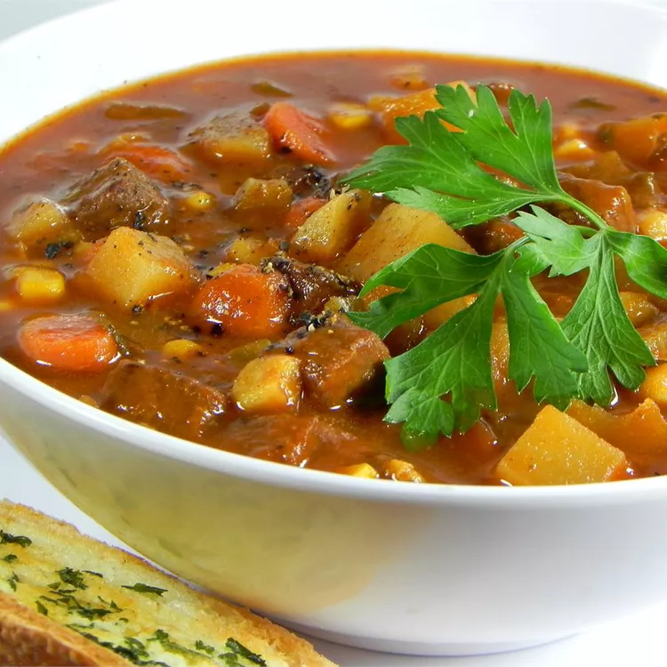

soup

description
This steak soup is an extremely hearty soup that only gets better in the
fridge.
It is one of the only soups you will not have to jazz up on your own, and
people will remember you for it!
This is a great cold-weather soup, but my family requests it all year.
ingredients
- 2 tablespoons butter
- 2 tablespoons vegetable oil
- 1 ½ pounds lean boneless beef round steak, cut into cubes
- ½ cup chopped onion
- 3 tablespoons all-purpose flour
- 1 tablespoon paprika
- 1 teaspoon salt
- ¼ teaspoon ground black pepper
- 4 cups beef broth
- 2 cups water
- 4 sprigs fresh parsley, chopped
- 2 tablespoons chopped celery leaves
- 1 bay leaf
- ½ teaspoon dried marjoram
- 1 (15.25 ounce) can whole kernel corn, drained
- 1 ½ cups peeled, diced Yukon Gold potatoes
- 1 ½ cups sliced carrots
- 1 ½ cups chopped celery
- 1 (6 ounce) can tomato paste
steps
-
Melt butter and oil in a large skillet over medium heat until the foam
disappears from butter. Cook and stir beef and onion in butter-oil
mixture until browned, about 10 minutes.
-
While beef is cooking, mix together flour, paprika, salt, and pepper in
a small bowl. Sprinkle flour mixture over browned beef; stir to coat and
set aside.
-
Pour beef broth and water into a large soup pot. Stir in parsley, celery
leaves, bay leaf, and marjoram. Stir in beef mixture; bring to a boil.
Reduce heat to medium-low, cover the pot, and simmer, stirring
occasionally, until meat is tender, about 45 minutes.
-
Mix in corn, potatoes, carrots, celery, and tomato paste. Bring to a
simmer and cook uncovered, stirring occasionally, until vegetables are
tender and soup is thick, 15 to 20 minutes. Remove bay leaf and serve
hot.
back to menu